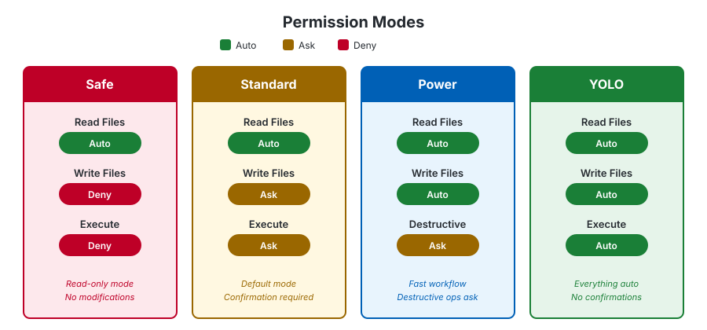

Chapter 2: Install & Your First Conversation #
"A journey of a thousand commits begins with a single install."
📖 15 min read
What you'll learn:
- How to install NeamCode on macOS, Linux, or Windows
- Setting up your first AI provider
- Running the health check
- Having your very first AI-powered conversation
- Understanding the permission prompts
2.1 Prerequisites #
Before installing NeamCode, make sure you have:
| Requirement | Minimum Version | Check With |
|---|---|---|
| Node.js | 18.0.0 | node --version |
| npm | 9.0.0 | npm --version |
| git | 2.30.0 | git --version |
| Disk space | 200 MB free | — |
💡 Tip — Don't have Node.js? The fastest way:
- macOS: brew install node
- Linux: curl -fsSL https://deb.nodesource.com/setup_20.x | sudo -E bash - && sudo apt install -y nodejs
- Windows: Download from nodejs.org
2.2 Installation #
Quick Install (Recommended) #
macOS / Linux:
$ curl -fsSL https://neamcode.com/install.sh | shWindows (PowerShell):
> irm https://neamcode.com/install.ps1 | iexnpm Global Install #
$ npm install -g neamcodeManual Download #
Download the platform-specific package from GitHub Releases:
| Platform | Architecture | Package |
|---|---|---|
| macOS | Apple Silicon (arm64) | neamcode-v0.3.5-macos-arm64.tar.gz |
| macOS | Intel (x86_64) | neamcode-v0.3.5-macos-x64.tar.gz |
| Linux | x86_64 | neamcode-v0.3.5-linux-x64.tar.gz |
| Linux | arm64 | neamcode-v0.3.5-linux-arm64.tar.gz |
| Windows | x86_64 | neamcode-v0.3.5-windows-x64.zip |
Then extract and install:
# macOS / Linux
$ tar xzf neamcode-v0.3.5-<platform>-<arch>.tar.gz
$ cd neamcode-v0.3.5-<platform>-<arch>
$ ./install.sh
# Windows — extract zip, then run in PowerShell:
> .\install.ps1Verify Installation #
$ neamcode --version
0.3.5If you see the version number, you're ready to go.
2.3 Setting Up an AI Provider #
NeamCode needs at least one AI provider to work. You have several options:
Option A: Ollama (Free, Local, Offline) #
This is the easiest way to start — completely free, runs on your machine.
- Install Ollama:
# macOS
$ brew install ollama
# Linux
$ curl -fsSL https://ollama.ai/install.sh | sh
# Windows — download from https://ollama.ai- Start Ollama and download a model:
$ ollama serve &
$ ollama pull llama3.2:3b- That's it. NeamCode auto-detects Ollama. No API key needed.
💡 Tip — For machines with 16GB+ RAM, use ollama pull qwen2.5-coder:7b for better coding quality. See Chapter 14 for the complete model guide.
Option B: Anthropic (Claude) #
- Get an API key from console.anthropic.com
- Set the environment variable:
$ export ANTHROPIC_API_KEY="sk-ant-..."
# To persist across sessions, add to your shell profile:
$ echo 'export ANTHROPIC_API_KEY="sk-ant-..."' >> ~/.zshrcOption C: OpenAI #
- Get an API key from platform.openai.com
- Set the environment variable:
$ export OPENAI_API_KEY="sk-..."Option D: Google Gemini #
- Get an API key from aistudio.google.com
- Set the environment variable:
$ export GEMINI_API_KEY="AI..."Interactive Setup #
Don't want to set environment variables manually? Use the setup wizard:
$ neamcode setupThis walks you through configuring providers interactively.
2.4 Health Check — Make Sure Everything Works #
Before your first session, run the health check:
$ neamcode probe
OK ollama-local: Connected to Ollama at http://127.0.0.1:11434
FAIL gemini-default: Missing GEMINI_API_KEY
FAIL openai-default: Missing OPENAI_API_KEY
OK mock-offline: Mock provider is always ready (offline safe).
OK mesh: Mesh disabled; skipped registration.This shows you which providers are available. In the example above, Ollama is ready and the cloud providers need API keys. You only need one green provider to get started.
📝 Note — The
mock-offlineandmeshentries are internal providers. Don't worry about them for now.
2.5 Your First Conversation #
This is the moment. Let's talk to NeamCode.
Start NeamCode #
$ neamcodeYou'll see the NeamCode banner:
███╗ ██╗███████╗ █████╗ ███╗ ███╗ ██████╗ ██████╗ ██████╗ ███████╗
████╗ ██║██╔════╝██╔══██╗████╗ ████║██╔════╝██╔═══██╗██╔══██╗██╔════╝
██╔██╗ ██║█████╗ ███████║██╔████╔██║██║ ██║ ██║██║ ██║█████╗
██║╚██╗██║██╔══╝ ██╔══██║██║╚██╔╝██║██║ ██║ ██║██║ ██║██╔══╝
██║ ╚████║███████╗██║ ██║██║ ╚═╝ ██║╚██████╗╚██████╔╝██████╔╝███████╗
╚═╝ ╚═══╝╚══════╝╚═╝ ╚═╝╚═╝ ╚═╝ ╚═════╝ ╚═════╝ ╚═════╝ ╚══════╝
v0.3.5Now type your first prompt:
You: Hello! Create a simple Python script that prints
"Hello from NeamCode!" and saves it as hello.pyWhat Happens Next #
NeamCode does several things:
- Reads your prompt and determines it needs to create a file
- Asks for permission (if in standard mode):
NeamCode wants to create file: hello.py
Allow? (y/n/always)- Creates the file once you approve
- Confirms the action
Let's verify it worked:
You: Run hello.py
NeamCode: I'll run the Python script for you.
$ python3 hello.py
Hello from NeamCode!🎉 Congratulations! You've just had your first AI-assisted coding conversation.
2.6 Understanding Permission Prompts #
When NeamCode wants to do something beyond just reading files, it asks your permission. This is a key part of how NeamCode keeps you in control.

Permission Types:
┌──────────────┬──────────────────────────────────┐
│ Action │ What it means │
├──────────────┼──────────────────────────────────┤
│ Read file │ Look at a file (auto-approved) │
│ Write file │ Create or overwrite a file │
│ Edit file │ Modify part of an existing file │
│ Execute │ Run a shell command │
│ Destructive │ Delete files, force push, etc. │
└──────────────┴──────────────────────────────────┘When prompted, you can respond:
| Response | Meaning |
|---|---|
y |
Yes, do it this time |
n |
No, don't do it |
always |
Yes, and don't ask again for this type |
💡 Tip — NeamCode has four permission modes: safe (read-only), standard (asks before writes), power (asks only for destructive ops), and yolo (fully automatic, for CI/CD). Chapter 18 covers these in detail. Start with standard — it's the default for a reason.
2.7 Essential First Commands #
Here are a few commands to try in your first session:
Get Help #
You: /helpShows all available slash commands.
Check What NeamCode Can Do #
You: What skills do you have?NeamCode will list its built-in tools — file operations, code search, git, web, and more.
Ask About Your Project #
You: What files are in this directory?NeamCode uses glob and dir_tree to explore your project.
End Your Session #
Press Ctrl+C or Ctrl+D to exit. Your session is automatically saved.
2.8 Configuration File (Optional) #
NeamCode works out of the box, but you can customize it with a configuration file:
$ neamcode initThis creates neamcode.config.yml in your current directory. You can configure:
- Which providers to use and in what order
- Token budgets and cost limits
- Permission mode
- Theme and UI preferences
- MCP server connections
We'll explore configuration in depth in Chapter 8, but here's a minimal example:
# neamcode.config.yml
providers:
- name: ollama-local
type: ollama
host: http://127.0.0.1:11434
model: llama3.2:3b
role: primary
tokens:
sessionBudget: 100000
warningThreshold: 0.8
permissions:
mode: standard📝 Note — You don't need a config file to get started. NeamCode's defaults are sensible. Create one when you want to customize.
2.9 Directory Structure After Install #
After installing NeamCode, here's what lives on your system:
~/.neamcode/
├── bin/
│ └── neamcode ← CLI wrapper script
├── lib/
│ ├── dist/
│ │ └── index.js ← Main application (built)
│ ├── node_modules/ ← Dependencies
│ └── package.json ← Version manifest
├── config/
│ └── config.yaml ← User configuration
├── memory/ ← Auto memory (Chapter 11)
│ └── <project-hash>/
│ └── MEMORY.md
└── VERSION ← Installed version💡 Tip — The ~/.neamcode/config/ directory is preserved during uninstalls and updates. Your settings are safe.
2.10 Uninstalling #
If you ever need to remove NeamCode:
# Via installer
$ curl -fsSL https://neamcode.com/install.sh | sh -s -- --uninstall
# Or directly
$ ~/.neamcode/bin/neamcode uninstall
# Windows (PowerShell)
> irm https://neamcode.com/install.ps1 | iex -UninstallYour configuration in ~/.neamcode/config/ is preserved.
2.11 Troubleshooting #
"Command not found: neamcode" Your PATH might not include ~/.neamcode/bin. Add it:
$ echo 'export PATH="$HOME/.neamcode/bin:$PATH"' >> ~/.zshrc
$ source ~/.zshrc"No providers available" You need at least one provider. The easiest fix: install Ollama (Section 2.3, Option A).
"EACCES: permission denied" On macOS/Linux, try:
$ sudo chown -R $(whoami) ~/.neamcodeProbe shows all FAIL Check your internet connection and API keys. Or install Ollama for offline use.
Exercises #
🎯 Exercise 2.1 — Install NeamCode and run neamcode --version. Verify it shows 0.3.5.
🎯 Exercise 2.2 — Set up at least one provider (Ollama recommended for beginners). Run neamcode probe and confirm at least one OK result.
🎯 Exercise 2.3 — Start NeamCode and ask it to create a file. Watch the permission prompt. Try responding with y, then try always. Notice the difference.
🎯 Exercise 2.4 — Ask NeamCode: "What directory am I in? List the files here." Observe which skills it uses to answer.
🎯 Exercise 2.5 — Type /help in your NeamCode session. Scan the list of commands. Don't memorize them — just get a feel for what's available. We'll cover all of them in Chapter 8.
Previous: Chapter 1 — Meet NeamCode
Next: Chapter 3 — The Art of Prompting